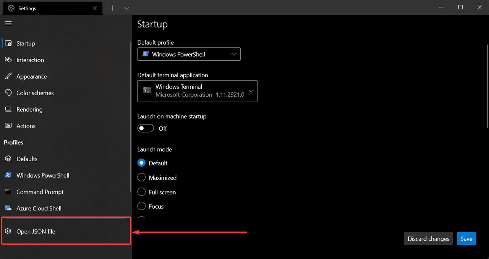

I'm trying to add a new terminal (Git Bash) to the new Windows Terminal.
However, I can't get it to work.
I tried changing the commandline property in the profiles array to git-
bash.exe but no luck.
Does anyone have an idea how to get this to work?
Answer
Overview
- Open settings with
Ctrl+,
- You'll want to append one of the profiles options below (depending on what version of git you have installed) to the
"list": portion of the settings.json file:

{
"$schema": "https://aka.ms/terminal-profiles-schema",
"defaultProfile": "{00000000-0000-0000-ba54-000000000001}",
"profiles":
{
"defaults":
{
// Put settings here that you want to apply to all profiles
},
"list":
[
<put one of the configuration below right here>
]
}
}
Profile options
Uncomment correct paths for commandline and icon if you are using:
- Git for Windows in
%PROGRAMFILES%
- Git for Windows in
%USERPROFILE%
-
If you're using scoop
{
"guid": "{00000000-0000-0000-ba54-000000000002}",
"commandline": "%PROGRAMFILES%/Git/usr/bin/bash.exe -i -l",
// "commandline": "%USERPROFILE%/AppData/Local/Programs/Git/bin/bash.exe -l -i",
// "commandline": "%USERPROFILE%/scoop/apps/git/current/usr/bin/bash.exe -l -i",
"icon": "%PROGRAMFILES%/Git/mingw64/share/git/git-for-windows.ico",
// "icon": "%USERPROFILE%/AppData/Local/Programs/Git/mingw64/share/git/git-for-windows.ico",
// "icon": "%USERPROFILE%/scoop/apps/git/current/usr/share/git/git-for-windows.ico",
"name" : "Bash",
"startingDirectory" : "%USERPROFILE%"
},
You can also add other options like:
{
"guid": "{00000000-0000-0000-ba54-000000000002}",
// ...
"acrylicOpacity" : 0.75,
"closeOnExit" : true,
"colorScheme" : "Campbell",
"cursorColor" : "#FFFFFF",
"cursorShape" : "bar",
"fontFace" : "Consolas",
"fontSize" : 10,
"historySize" : 9001,
"padding" : "0, 0, 0, 0",
"snapOnInput" : true,
"useAcrylic" : true
}
Notes
- make your own
guid as of https://github.com/microsoft/terminal/pull/2475 this is no longer generated.
-
the guid can be used in in the globals > defaultProfile so you can press you can press Ctrl``Shift``T or start a Windows terminal and it will start up bash by default
"defaultProfile" : "{00000000-0000-0000-ba54-000000000001}",
-
-l -i to make sure that .bash_profile gets loaded
- use environment variables so they can map to different systems correctly.
- target
git/bin/bash.exe to avoid spawning off additional processes which saves about 10MB per process according to Process Explorer compared to using bin/bash or git-bash
I have my configuration that uses Scoop in
https://gist.github.com/trajano/24f4edccd9a997fad8b4de29ea252cc8
Suggest
There are below things to do.
- Make sure the
git command runs successfully in Command Prompt.
That means you need to add git to path when install git or add it to system
environment later.
- Update the file
profile.json: open Settings by pressing Ctrl+, in Windows Terminal, click on Open JSON file in the sidebar, and add following snippet inside the word profiles:
{
"tabTitle": "Git Bash",
"acrylicOpacity" : 0.75,
"closeOnExit" : true,
"colorScheme" : "Campbell",
"commandline" : "C:/Program Files/Git/bin/bash.exe --login",
"cursorColor" : "#FFFFFF",
"cursorShape" : "bar",
"fontFace" : "Consolas",
"fontSize" : 12,
"guid" : "{14ad203f-52cc-4110-90d6-d96e0f41b64d}",
"historySize" : 9001,
"icon": "ms-appdata:///roaming/git-bash_32px.ico",
"name" : "Git Bash",
"padding" : "0, 0, 0, 0",
"snapOnInput" : true,
"useAcrylic" : true
}
The icon can be obtained here: git-bash_32px.ico
You can add icons for Tab to this location:
%LOCALAPPDATA%\packages\Microsoft.WindowsTerminal_8wekyb3d8bbwe\RoamingState
Put 32x32 PNG/icons in this folder, and then in profile.json you can
reference the image resource with the path starting with ms-appdata://.
Note that, please make sure the Guidis correct and it matches the
corresponding correct configurations.
- Test that git bash works in Windows Terminal.
The final result is below: